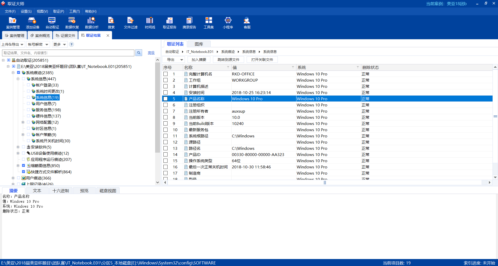
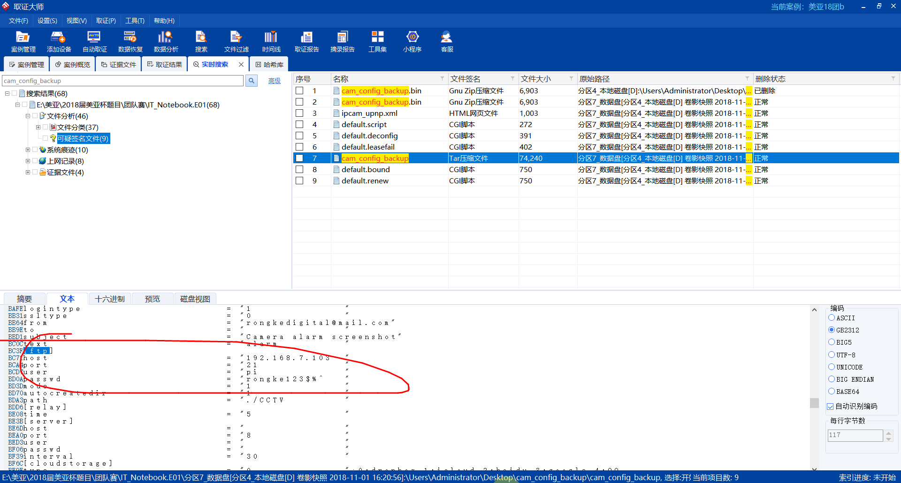

进去先观察各个盘，有的需要卷影分析给分析出来，有的需要BitLocker解密
然后进行自动取整，然后发现有
然后用这个密钥对某个盘进行解密，完事之后再自动取证
[单选题] 13.根据镜像文件 “IT_Notebook.E01” 的内容，回答关于荣科数码(RKD)的笔记本计算机的问题。 13.荣科数码(RKD)的笔记本计算机，其操作系统共有多少个可登录用户？ (1分)
A. 1
B. 2
C. 3
D. 4
E. 5
标记本题
B
启用了两个

[单选题] 14.该笔记本计算机硬盘的第5分区为Bitlocker加密盘，寻找相关的恢复密钥。该密钥最后一组数字为？ (1分)
A. 405579
B. 236947
C. 663058
D. 193194
E. 231904
标记本题
选C
前边已经找过了
###15. [单选题] 15.该笔记本计算机硬盘的操作系统是什么？ (1分)
A. 视窗XP 专业版
B. 视窗7 企业版
C. 视窗8 家用版
D. 视窗10 专业版
E. Linux Ubuntu 18.04 LTS
标记本题
D

###16. [单选题] 16.黑客是通过什么方式入侵该笔记本计算机的操作系统？ (1分)
A. 远程桌面暴力破解(RDP Brute Force)
B. 病毒感染入侵
C. 操作系统漏洞入侵
D. 分布式拒绝服务入侵(DDoS)
E. SQL注入漏洞入侵
标记本题
A
在连接登录的日志中发现有事件：试图使用显示凭据登录
然后搜索该事件4648
发现有很多，那么猜测是远程桌面暴力破解
然后我们再去验证一下，看看时间也是大体对应的


###17. [单选题] 17.接上题，黑客是通过哪个网络地址(IP Address)入侵该荣科数码的操作系统？ (1分)
A. 192.168.7.11
B. 192.168.7.12
C. 192.168.7.16
D. 192.168.7.102
E. 192.168.7.103
标记本题
D
思路同上
###18. [单选题] 18.接上题，黑客首次成功入侵该操作系统的日期时间？ （答案格式 －“本地时间＂：YYYY-MM-DD HH:MM:SS +8） (1分)
A. 2018-10-25 16:18:44 +8
B. 2018-11-01 15:23:07 +8
C. 2018-11-01 15:31:42 +8
D. 2018-11-01 15:36:51 +8
E. 2018-11-01 17:42:08 +8
标记本题
C
这个时间应该会在最后一次爆破失败到第一次远程桌面链接成功之间

###19. [单选题] 19.接上题，黑客用于入侵该操作系统的工作站名称？ (1分)
A. RKD-OFFICE
B. BLACK-I
C. WIN-H6OUSLN5PIH
D. ANONYMOUS
E. RKD-GUEST
标记本题
A
###20. [单选题] 20.黑客在该笔记本计算机的Windows资源管理器(Windows Explorer)中曾搜寻过的文字？ (1分)
A. iexplorer, password, login
B. user, password, security
C. s, documents, excel
D. login, password, ipcam
E. password, iexplorer, s
标记本题
E
正常在这能找到的，不知道为啥
###21. [单选题] 21.入侵该笔记本计算机后，黑客透过命令提示符(cmd)执行某些命令，紧接生成了什么文件？ (1分)
A. ip.txt
B. arp.txt
C. netscan.txt
D. ip.txt, arp.txt
E. ip.txt, arp.txt, netscan.txt
标记本题
生成文件一般会产生相应的快捷方式，在文件快捷方式解析里，可以根据他入侵系统时间，来查找这个时间点之后的文件解析
再在目标文件路径中看看有没有包含
###22. [单选题] 22.从笔记本计算机中，寻找黑客的命令控制服务器(C&C服务器)的网络位置？ (1分)
A. 220.246.55.208
B. acdn.adnxs.com
C. 3a95a35cd6b35f714120f210c0ac0c10.clo.footprintdns.com
D. code.jquery.com
E. 220.246.55.212
标记本题
A
没有什么固定的办法就以题搜题
这里找到一个FTP是与前边对应的

###23. [单选题] 23.黑客在该笔记本计算机系统通过什么形式链接命令控制服务器(C&C服务器)？ (1分)
A. FTP
B. SSH
C. TELNET
D. HTTP
E. SFTP
标记本题
A
同上
###24. [单选题] 24.黑客从命令控制服务器(C&C服务器)下载过什么档案到该笔记本计算机？ (1分)
A. putty-64bit-0.70-installer.msi
B. iepv.zip
C. WinSCP-5.13.4-Setup.exe
D. mimikatz_trunk.7z
E. 以上皆是
标记本题
B
借助前几题，查ftp的黑客网址，找浏览器下载缓存

###25. [单选题] 25.黑客从笔记本计算机的网络浏览器Internet Explorer下载过什么档案？ (1分)
A. netscan_portable.zip
B. 7z1805-x64.exe
C. mimikatz_trunk.zip
D. mimikatz_trunk.7z
E. 以上皆是
标记本题
E

###26. [单选题] 26.黑客入侵该笔记本计算机系统后，曾安装过什么软件？ (1分)
A. 7-Zip
B. WinSCP
C. PuTTY
D. Mimikatz
E. SoftPerfect Network Scanner
标记本题
A
查看软件安装，
根据时间排除选A

###27. [单选题] 27.在笔记本计算机中，黑客执行程序\Users\Administrator\Desktop\netscan_portable\64-bit\netscan.exe的具体时间？ （答案格式 －“本地时间＂：YYYY-MM-DD HH:MM:SS +8） (1分)
A. 2018-11-01 16:07:12 +8
B. 2018-11-01 16:16:49 +8
C. 2018-11-01 16:04:34 +8
D. 2018-11-01 17:25:12 +8
E. 以上皆不是
标记本题
C

###28. [单选题] 28.2018年11月1日16:06，在笔记本计算机中有多少个关于网络信息的档案被黑客建立？ (1分)
A. 1
B. 2
C. 3
D. 4
E. 5
标记本题
B
救命不会，求教
###29. [单选题] 29.在笔记本计算机中，黑客执行程序\Users\Administrator\Desktop\iepv\iepv.exe的具体时间？ （答案格式 －“本地时间＂：YYYY-MM-DD HH:MM:SS +8） (1分)
A. 2018-11-01 16:07:12 +8
B. 2018-11-01 16:09:07 +8
C. 2018-11-01 16:17:51 +8
D. 2018-11-01 16:18:18 +8
E. 以上皆非
标记本题
A

###30. [单选题] 30.接上题，执行程序iepv.exe涉及什么dll文件？ (1分)
A. NTDLL.DLL
B. MSVCRT.DLL
C. BCRYPTPRIMITIVES.DLL
D. WINDOWS.STORAGE.DLL
E. 以上皆是
标记本题
E
这道题需要我们把这个病毒程序导出来，在本地查看
然后把iepv.exe下载在本机的信任区，用dependency打开

###31. [单选题] 31.接上题，紧接程序iepv.exe执行后，有什么档案被建立，该档案哈希值(MD5)为？ (1分)
A. EDCE37A107A0D661D6B2ABD3449A156E
B. FE26492B12917DFE1B5A65252B8B4798
C. E23B7F04247A927E6EB98C26200135E1
D. B3C9312AC745F20F936577D426456AD8
E. E0836588DA17DA632B82CC2FDDE59E98
标记本题
C
建立哈希库来搜索
也可以反编译或者杀毒软件预警

排除readme.txt这种意义不大，然后的话iepassword.txt和iepv_sites.txt的争议比较大
查看iepassword.txt的文本更可疑，所以猜测就是这个文件

###32. [单选题] 32.在笔记本计算机中，黑客曾执行程序\Users\Administrator\Downloads\mimikatz_trunk\x64\mimikatz.exe多少次？ (1分)
A. 2
B. 3
C. 4
D. 5
E. 6
标记本题
A

###33. [单选题] 33.接上题，执行上述mimikatz.exe后，黑客曾经输入了什么命令符？ (1分)
A. debug, logonpasswords
B. logon, passwords
C. privilegE：:debug, sekurlsA：:logonpasswords
D. privilegE：:logon, sekurlsA：:passwords
E. 以上皆不是
标记本题
C
根据常识我们知道，mimikatz是内网渗透的神器，执行之后会出现命令提示框输入命令操作
所以我们可以通过mimikatz的日志来追查他使用的命令

###34. [单选题] 34.接上题，mimikatz.exe执行上述命令符后，哪项信息可被黑客用作破解该系统其他用户的密码？ (1分)
A. NTLM: e19ccf75ee54e06b06a5907af13cef42
B. NTLM: 059b6a3134dd40d5543c59da1e10c664
C. SHA1: 9131834cf4378828626b1beccaa5dea2c46f9b63
D. SHA1: 116f90c6089215de0d7f4f530c9276f75a6c5209
E. 以上皆不是
标记本题
B
还是这个日志，我们在里边找到了两个用户信息，一个是Adminbalabalabala这个用户，另一个是auxsup（根据系统用户信息，好像就这俩用户没被禁用）
审题：破解其他用户密码，那肯定是其他用户的信息啊，黑客黑的是Adminbalabalabala，所以找auxsup的信息就可以了，SHA1是不能破解的，所以选B
###35. [单选题] 35.接上题，续上述mimikatz的结果，该密码长度为多少字符？ (1分)
A. 6
B. 7
C. 8
D. 9
E. 以上皆不是
标记本题
B
把那个NTLM给解密

###36. [单选题] 36.在笔记本计算机中，黑客是否使用网络浏览器进入过荣科数码的网络摄像机(IP Camera)进行浏览？如进入过，具体日期及时间为？ （答案格式 －“本地时间＂：YYYY-MM-DD HH:MM:SS +8） (1分)
A. 没有
B. 2018-11-01 16:02:37 +8
C. 2018-11-01 16:09:30 +8
D. 2018-11-01 17:17:14 +8
E. 以上皆不是
标记本题
C
找到很多这样的IP，时间上也相符

###37. [单选题] 37.在笔记本计算机中，除网络浏览器外，黑客还通过什么软件入侵网络摄像机(IP Camera)？ (1分)
A. WinSCP
B. FileZilla
C. PuTTY
D. 命令提示符(CMD)
E. 档案总管
标记本题
A
以题讲课老师是这么说的
但我还是不太会
###38. [单选题] 38.在笔记本计算机中，黑客从网络摄像机提取了1个档案到该系统硬盘，该档案的哈希值(MD5)为？ (1分)
A. 79985D36B7A860473AA19A0B82B4747E
B. CA47E27329203C266372D04475DB2C57
C. B6C75B8D8C99C35973ECF55C4C345F51
D. C28983B21CA6558D00806CCBDCA5D502
E. BBB0C766E5F65DB23F5F317738FDBCB5
标记本题
C
参考31题创建哈希库
然后经过时间和常识的筛选，应该是这个

###39. [单选题] 39.接上题，分析上述从网络摄像机提取的档案，除账户admin外还有什么登陆账户发现？ (1分)
A. user
B. public
C. guest
D. user, guest
E. user, public
标记本题
D
同上题，直接搜，然后查看

###40. [单选题] 40.接上题，网络摄像机可以透过什么方式链接多流媒体服务器？ (1分)
A. SFTP
B. TELNET
C. SSH
D. FTP
E. 以上皆不是
标记本题
D

###41. [单选题] 41.在笔记本计算机中，黑客曾经使用系统的记事本(Notepad)最后开启的一个文件名称为? (1分)
A. config_alarm.ini
B. config_3thddns.ini
C. readme.txt
D. desktop.ini
E. 以上皆不是
标记本题
A
不行了，不太会
直接仿真，因为是windows系统，先查注册表看登录密码，\HKEY_LOCAL_MACHINE\SOFTWARE\Microsoft\Windows NT\CurrentVersion\Winlogon
“DefaultDomainName”后面即用户名，“Defaultpassword”后面即密码。(扯淡的是找了半天注册表才发现没有密码)
直接进去打开Notepad，在里边分析
[单选题] 42.在笔记本计算机中，黑客最后把被入侵用户桌面的档案全部删除，具体删除的日期时间是？ （答案格式 －“本地时间＂：YYYY-MM-DD HH:MM:SS +8） (1分)
A. 2018-11-01 15:32:46 +8
B. 2018-11-01 15:34:29 +8
C. 2018-11-01 17:32:29 +8
D. 2018-11-01 17:43:09 +8
E. 以上皆不是
标记本题
C
这道题注意审题，黑客最后把桌面上的文档全删了，我们查看远程连接，看他断开连接的时间是多少
再在卷影快照的桌面文档中看桌面文档大约什么时候消失的，找这两个时间点的区间